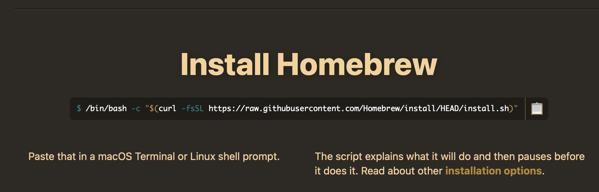

There is a need to bring all resources that relate to Git and GitHub together because some of the available videos and links are outdated. In addition, online resources are either too long or they only address a small part of the bigger picture.
(Please let me know if you notice any mistakes.)
Installing Git on to Mac
Open Mac Terminal and install Homebrew by:
- Copy the “Install Homebrew” link from the website:

- Paste the link into the Mac terminal and press enter.
- To ensure that homebrew is installed, type “brew –version”.
- Install git by typing “brew install git”.
- Check installation by typing “git –version”. It will show you the latest (current) version.
- If you ever wanted to upgrade git, simply follow steps 4 and 5, and it will update and overwrite the previous version.
Now you can close the Mac terminal and conduct the rest of processing from the RStudio terminal.
Note. If you need help with creating an SSH key, visit here: Connecting to GitHub with SSH.
First, create an RStudio project on your computer
Once created, then access it from the RStudio terminal using the following command - considering the folder is named Git-GitHub-2022, for example, on your Mac’s Desktop:
cd ~/Desktop/Git-GitHub-2022In RStudio, create a markdown document and name it “README.md”.
Create a repo on GitHub
It can be either public or private depending on your preference. Once created, it will show the following screen:
Run the first line of the code - and the current README.md document will be replaced/overwritten in the directory (it only happens because I am adding these instructions and setting up the repo at the same time). Make sure you save the current markdown document (README.md) before running the first line of the code.
echo "# Git-GitHub-Mac-2022" >> README.md
git init
git add README.md
git commit -m "first commit"
git branch -M main
git remote add origin git@github.com:usman-afzali/Git-GitHub-Mac-2022.git
git push -u origin mainThen run the rest of the lines.
You will see the new README.md file has been added your GitHub environment/repository (repo). Now click the Git dialogue box on RStudio (see below) and tick all check boxes.
Click commit, type a commit message, click commit, close, and push. Refresh the GitHub screen and note that the new files have been added to the remote (GitHub) repository.
Git clone
Used in case you lose access to the repo on the local machine. First, cd where you want the cloned repository to appear. Then follow the command below (e.g., if you are cloning the current repo).
git clone git@github.com:usman-afzali/Git-GitHub-Mac-2022.gitSet up gitignore
Type names of all files inside the current directory that you don’t want to be pushed to the GitHub repo. They can be history files (that are already in gitignore), sensitive files, or maybe large files. In addition, add .DS_Store to gitingore too. The soon you change a file (any file), it will show up in the Git terminal on RStudio. And as the previous section, we add a commit message and push it to the remote GitHub repo.
Git branching on local repo
When git is created as above, it will only have a “main” branch. You can see this with the command:
git branchAll git processing, until now, happens in the “main” branch.
A new branch (e.g., called “Rcode”) can be added onto the local git repo:
git branch RcodeNow, the “git branch” command will show you both branches, with the active branch showing a * before its name. To use the new branch, use:
git checkout RcodeNow, you can see that the active branch is “Rcode”. Any additions at this stage will be within the Rcode branch. Create a new file inside the new branch “sample-code-cars.R”. Once you commit, the newly created sample-code-cars.R file will not be pushed into GitHub remote repo. The file disappears when you switch branch.
To bring the new file into the main branch on remote repo, merge the “Rcode” branch into the main branch (you should be in the main branch to do so):
git merge RcodeThis is known as fast-forward merge. If you bring any new changes to the “Rcode” branch or sample-code-cars.R file on this branch, you need to merge again. These changes will not automatically merge into the main branch.
Deleting and renaming a branch
Need to be outside a branch first. Then use:
git branch -d <branch name>To rename, be inside that very branch. Then use:
git branch -m <branch name>Using Git outside RStudio
If needed, you can use git outside RStudio too, using Mac terminal. For example, you want to use git on your Desktop for version control of a file. Opening terminal, you can access Desktop with
cd ~/DesktopCreate a git repository:
mkdir git-repoTo enter new repo:
cd ~/Desktop/git-repoIf you check git status (below) in this directory, you will see the following message: “fatal: not a git repository (or any of the parent directories): .git”
git statusIf you type “ls” in the terminal and hit return, you will see no content because it is an empty folder.
Use the following command to initialize git:
git initNow that git has been initialized, you can see the hidden files within this folder by using:
ls -aGet inside .git folder
cd ~/Desktop/git-repo/.gitThen command ls and you will see all items inside.
To get out of each directory, use:
cd ..From .git, it will take you two such steps (commands) to get back to the Desktop.
If at any stage, you want to know where you currently are located, use the following command and it will give you the directory address.
pwdFor instance, if you were in git-repo that you previously created, it will show you the following:
If needed to show hidden files, the following commands, one after another, are to be used. Change yes to no to hide them again.
defaults write com.apple.Finder AppleShowAllFiles yes
killall FinderExtra
- Use “clear” to clean the terminal.
- If you added a new file on GitHub, you can use the “pull” command from git dialogue box to bring that file to your local machine repository.
- A more sophisticated way - before the pull command - will be to use git fetch - that helps you see what the new additions are before pulling them to your local repo. Use:
git fetch origin…followed by git status. And you will see that the main branch is behind by 1 commit (related to the newly added file). The you can use the following to access the remote directory and see the newly added file(s):
git checkout origin/mainIt will show you the file name. You can then access/see the new file in the local repo. The following command shows what is inside the new file:
cat <filename.extension>Once you are happy with the new file, you can checkout/switch to the local repo (main) and use pull to permanently bring the new file(s) in to the local repo. Besides the git dialogue box, you can also use the following command to pull the newly added file.
git pull origin main- Use “git log” at any stage to see all of the commits.
Adding a branch on GitHub (remote repo)
A branch can be created on GitHub by typing a name in the window shown below after clicking on “main”:
For example, the new branch is called “pycode” within which a python file can be created, named “experimental.py”. When you fetch git, it tells you that we have a new branch: 
Switch to the new remote repo:
git checkout origin/pycode… And access contents of the new file:
cat experimental.pyFinally, merge the new file as explained before. But you need to switch to the main branch first.
git checkout main
git merge origin/pycodeOnce merged, there is no need to pull the file because now the new file has been merged into the local repo.
References and further info:
- Install Git on MacOS (Macbook M1, M1 Max, M1 Pro, M2) and push project into Github | Homebrew - YouTube video
- See Fibonacci numbers with Git and GitHub - a GitHub repo. The video for this repo tutorial is available on YouTube: Intro to Git and GitHub with R and RStudio. The following references are also taken from the video above, if interested: 2a. Happy Git and GitHub for the useR - Website 2b. Git - The Simple Guide - Website 2c. Pro - Git - Website/Book 2d. Oh Shit, Git!?! - Website
- Git and GitHub Complete Guide - Free Udemy coures